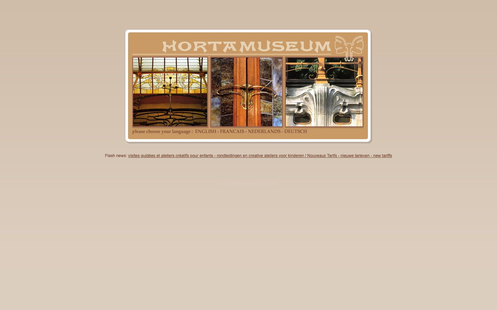

References / Website / 207
Horta Museum website, 2013
The Horta Museum’s old language page: an ochre panel with a white outline and rounded corners, flared Art Nouveau capitals, a whiplash butterfly ornament, and three framed photographs of Horta’s ironwork and glass.
- Source
- hortamuseum.be (archived January 2013) (archived copy)
- Creator
- Horta Museum
- Made
- Captured by the Wayback Machine on 14 January 2013
- Style
- Art Nouveau (agent-proposed, not yet reviewed by a person)
- Moods
- Warm, crafted, quiet
- Evidence
- Captured with
tools/capture.mjs(headless Chrome, 1440 × 900) on 28 September 2026 from the Wayback Machine copy of 14 January 2013 and inspected. Nothing covers the page. The whole panel is drawn with images, so the computed-style measurement sees almost none of it. - Reviewed
- Rights
- Third-party work, stored with credit for commentary. License: unverified. Rights policy
The live site at hortamuseum.be now uses a dark photographic home page with a modern serif wordmark. This record describes the 2013 archive copy.
Observed
- The page ground is a plain light tan. One centred panel sits near the top.
- The panel is ochre with rounded corners, inside a white frame with rounded corners and a soft gray edge.
- “HORTAMUSEUM” runs across the top in cream capitals with flared strokes and unusual forms: the M’s have curved middles and the U is pointed.
- At the right end of the title, a cream line ornament of two looping, wing-like whiplash curves, like a butterfly.
- A thin cream rule runs under the title.
- Three photographs sit in a row with thin light frames: a stained-glass skylight with curved ironwork, a curved brass door handle on wood and marble, and a stone facade with swelling, carved window surrounds.
- Below the photographs, “please choose your language” and the four language names in a brown serif.
- A line of news links in plain brown Arial sits below the panel.
Why it belongs
The page follows the style’s rules more closely than the museum’s current site: an earthy palette on a light ground, a framed and outlined panel, a hand-drawn display face, and a single whiplash ornament.
Measured: the panel, frame, title, and ornament are all images. Computed styles report 5 boxes with radius 0, no borders, and no pattern; only the screenshot pixels show the warm palette (two hue families, accent chroma 0.39). Pages of this period can only be judged by the rubric.
Borrow
Set a site title in flared display capitals with one whiplash ornament at its end, over a thin rule.
Show three detail photographs in a row, each with a thin light frame, inside one warm, rounded panel.
Measured
Machine-extracted by tools/extract-traits.js on . Full measurement.
- Type families
- arial (100%)
- Median radius
- 0 px
- Mean chroma
- 0.16
- Palette
- #dccdbd 74%
- #7b4a37 26%

